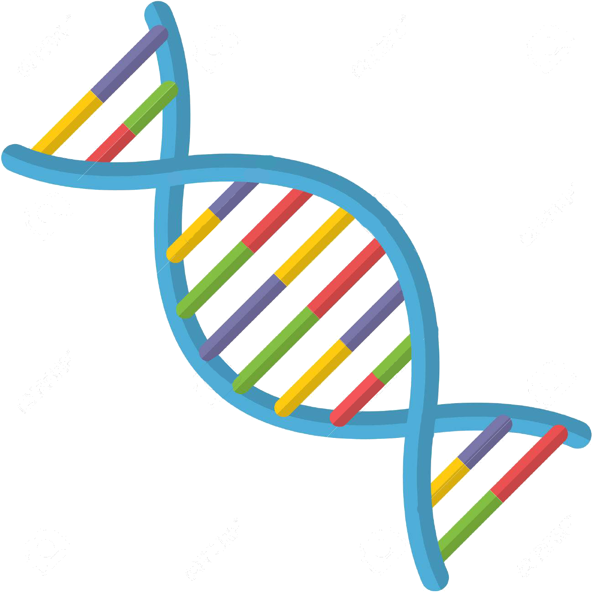
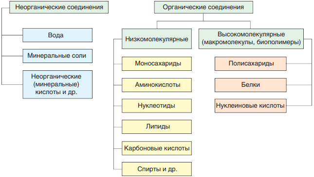

Химические соединения в живых организмах. Неорганические вещества
Количество воды неодинаково в разных тканях и органах. Так, у человека в сером веществе головного мозга ее содержание составляет 85 %, а в костной ткани — 22 %. Наибольшее содержание воды в организме наблюдается в эмбриональный период (95 %) и с возрастом постепенно уменьшается. Без употребления воды человек может прожить не более 5—7 дней.
Как вы уже знаете из курса химии, молекула воды (Н2О) состоит из двух атомов водорода, соединенных ковалентными полярными связями с атомом кислорода.
Связи Н-О-Н расположены под углом 104,5° друг к другу. Кислород обладает большей электроотрицательностью, чем водород, поэтому атом кислорода притягивает к себе общие электронные пары и приобретает частично отрицательный заряд. Атомы водорода приобретают частично положительный заряд, т. е. молекула воды является полярной.
Между атомом кислорода одной молекулы воды и атомом водорода другой молекулы возникает электростатическое притяжение. Такое взаимодействие более слабое, чем ионная связь, называется водородной связью. Каждая молекула воды, подобно маленькому магниту, притягивает к себе за счет образования водородных связей еще четыре молекулы (рис. 2). Благодаря образованию водородных связей молекулы воды связаны друг с другом. Поэтому вода при температурах от 0 °С до 100 °С может сохранять жидкое агрегатное состояние, тогда как подобные ей водородные соединения (например, H2S, NH3, HF) являются газами.
Биологическая роль воды в живых организмах связана с ее свойствами, прежде всего с малыми размерами молекул, их полярностью и способностью образовывать водородные связи между собой и с другими соединениями. Именно вода определяет объем клеток и внутриклеточное (тургорное) давление. Благодаря полярности молекулы воды способны формировать так называемые гидратные оболочки вокруг ионов и полярных молекул. Это способствует обособлению частиц и препятствует их склеиванию друг с другом, что особенно важно, например, для белковых молекул.
Полярность молекул и способность образовывать водородные связи делает воду универсальным растворителем для полярных веществ, лучшим, чем большинство известных жидкостей. В зависимости от растворимости в воде соединения условно делят на растворимые, или гидрофильные (от греч. гидор — вода, филия — люблю), и нерастворимые, или гидрофобные (от греч. фобос — страх). Гидрофильными веществами являются моно- и дисахариды, многие минеральные соли и кислоты, низшие спирты, низшие карбоновые кислоты и др. Гидрофобны высшие карбоновые кислоты, жиры и некоторые другие вещества.
ВИДЕОМАТЕРИАЛЫ
Видеоролик 1.
Видеоролик 2.